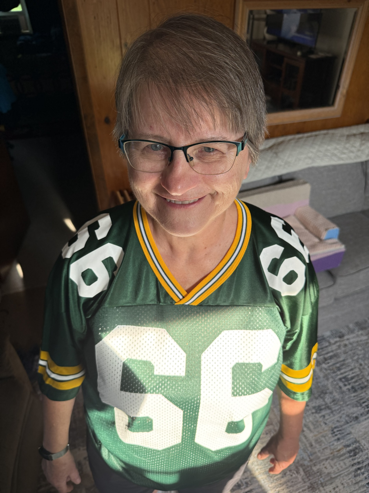
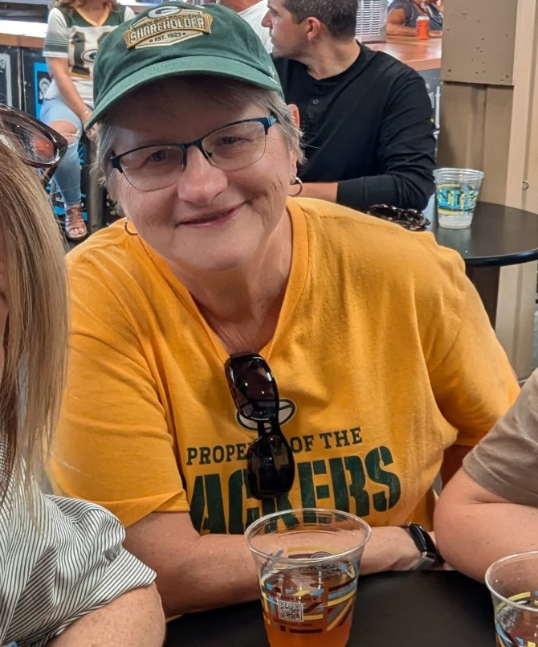

About me:
I've been recycling as long as I've been a fan of the Green Bay Packers, my whole life. It all started when companies started using reusable containers like glass bottles. They would charge you a bit extra as a deposit that you would get back if you returned the bottles; and thus my recycling journey began.
After bottles phased out - we would save the aluminum cans and recycle them. My mom would save them at work and bring them home (on the city bus) in a copy paper box every week. The scrap yards then also took glass and newspapers. Didn’t pay much but it saved a lot from going in the garbage. Eventually the scrap yards phased out the glass and newspapers but we continued saving the aluminum.
There was a lull in my efforts while the kids were little but I never stopped recycling. Life changed with me going back to school and learning a new career. It didn’t pay a lot but I was able to work at home which allowed me the freedom and joy of watching over my granddaughter while her mama was working and also my godson after her.
I started taking in aluminum cans from people and taking them to the scrap yard for a bit of extra cash. Through word of mouth with family and friends, everyone was saving their metals for me to recycle. Recycling basically became my side hustle. I started to get to know the guys who worked there. I talked to them, and they gave me tips and tricks on how to maximize my efforts and that all kinds of metal could be recycled, and that most of the stuff that paid more could be easily obtained just by taking electronics apart. So I started reaching out to people that I knew saying that if they had any broken electronics, that they could give them to me and I would take care of them and ensure that they were properly disposed of. I would also start driving around the different areas of my town looking for electronics that people were throwing away on garbage day. After doing this for a few years, and a lot of convincing from my children, I sent out an advertisement to my neighborhood informing anybody that if they needed to get rid of electronics, that I was their gal, and I would take almost anything that plugs into a wall.
Since then, I've been getting all kinds of stuff, and the best part? I don't even need to go out and get it anymore! people just come around and drop it off. Thankfully, I retired a little while ago, and since then, recycling has turned from a side hustle, to more of a hobby for me. But even though I'm retired, I go out and advocate for recycling and encourage people to start recycling themselves.


My Mission:
I hope to encourage more people to do their part in keeping the world clean, and to waste as little as possible. We all live in this world together so we must take care of it.
People always say that recycling is too much work. But recycling isn't hard, it's just about building up a habit, and then sticking to it. I think that when people think of recycling, they always think that they have to know everything and do everything correctly otherwise they're going to be prosecuted by the people who do it for a living. However the reality is, you just have to start small, start by recycling your aluminum cans (all kinds of cans), once you've got that down, you could start recycling something else. You don't have to be doing as much as me, but if you just take care of your plastic, steel (tin), and aluminum waste properly, that alone will make a huge difference.